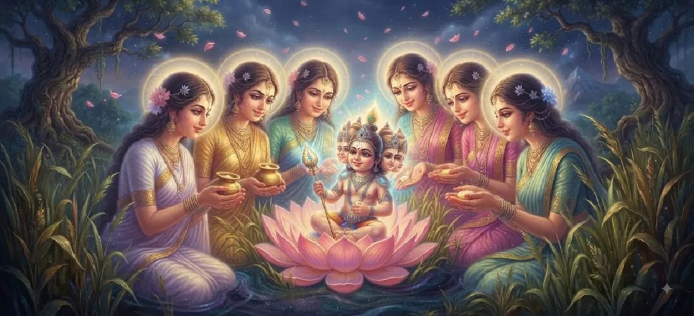

The Kṛttikās Nurture the Child
The thirteenth chapter of the Kumara Khanda explores the tender and profound bond between the divine infant Skanda and the noble Krittika sisters who step forward as his nursing mothers.
Overwhelmed by divine affection, the Krittikas embrace the radiant infant, bestowing upon him boundless maternal love that earns him the eternal title of Karttikeya.
Chapter 13 Highlights
Arrival of the Krittikas
The celestial sisters drawn to the radiant reed-bed.
Maternal Affection
Overflowing motherly love for the extraordinary child.
Feeding the Infant
The divine infant receiving nurture from all mothers.
Karttikeya Heritage
The origin of the sacred name linked to the Krittikas.
Saravana Sanctuary
The peaceful surroundings echoing with divine care.
Next Chapter Transition
Setting the stage for the full revelation of Shanmukha.
Core Topics in This Chapter
Discovery of the Infant in Saravana
While wandering near the sacred waters, the Krittika sisters (the celestial nymphs of the Pleiades) encounter the blindingly radiant infant resting amidst the reeds of Saravana.
Captivated by his heavenly charm, they approach with awe.
Awakening of Pure Maternal Love
Instantly, pure maternal affection floods the hearts of all the Krittikas, transcending ordinary mortal bonds and linking their souls eternally to the divine child.
They feel an overwhelming urge to protect and cherish him.
The Sacred Feeding and Care
Each Krittika wishes to nurse the infant, and through his divine play, the child accepts nourishment from all of them equally, manifesting marvelous grace.
The sacred grove fills with warmth and heavenly peace.
Bestowal of the Name Karttikeya
Because he is nurtured collectively by the Krittikas, the divine child becomes universally known as 'Karttikeya', cementing an immortal bond of motherhood.
This title honors their supreme devotion and care.
Mutual Blessings Between Child and Mothers
In return for their loving care, Kumara blesses the Krittikas with eternal fame, ensuring their names will be chanted alongside his across the universe forever.
Their divine status is elevated to the highest realms.
Celestial Witness and Divine Rejoicing
Sages and devas observing from the heavens praise the gentle interaction, realizing that divine power is tempered and sustained by pure maternal love.
The cosmos rejoices in this touching scene.
Transition to Chapter 14 (The Six-Faced Lord Appears)
Following this heartwarming nurturing phase, the narrative transitions smoothly into Chapter 14, where the full majesty of the six-faced lord is formally revealed.
The epic journey of Skanda continues to unfold.
Key Teachings of Chapter 13
Power of Motherhood
Maternal love has the power to nurture even the supreme divine.
Divine Grace
Sincere devotion draws down infinite celestial blessings.
Selfless Nurture
Pure care without expectation creates eternal bonds.
Sacred Titles
Names born of love carry spiritual resonance.
Sanctuary of Peace
Nature harbors divine mysteries in tranquility.
Seamless Evolution
Infant care naturally leads to majestic revelation.
Spiritual Reflection
The nurturing of Skanda by the Krittikas highlights that even the highest spiritual force is sustained by love, devotion, and tender care. In our own spiritual journey, wisdom must be nourished with love and patience before it can manifest fully.
Living the Message of Chapter 13
Cultivate compassion and maternal warmth in daily interactions with others.
Cherish those who guide, nurture, and support your personal growth.
Approach spiritual teachings with an open, loving, and receptive heart.
Key Spiritual Concepts
The tender, unconditional maternal love of the Krittikas.
The sacred title bestowed upon Skanda by his nursing mothers.
The divine nourishment and nurturing of the infant warrior.
The harmonious blending of supreme power with devotion.
The affectionate atmosphere surrounding the sacred reed grove.
The sacred spiritual attitude of divine motherhood.
Chapter Summary
Kumara Khanda Chapter 13 narrates the touching episode where the celestial Krittikas discover baby Skanda in Saravana, shower him with pure maternal love, nurse him equally, and earn him the eternal title of Karttikeya.
Frequently Asked Questions
1. What is the primary focus of Kumara Khanda Chapter 13?
Chapter 13 focuses on how the noble Krittikas discover the divine infant in Saravana and lovingly embrace and nurture him with maternal affection.
2. Who are the Krittikas in this context?
The Krittikas are the celestial nursing mothers (associated with the Pleiades star cluster) who step forward to care for baby Skanda.
3. How does the divine infant respond to the Krittikas?
He exhibits extraordinary grace, accepting nourishment from all of them equally through his divine play, cementing the title Karttikeya.
4. What is the next chapter after Chapter 13?
The next chapter is titled 'The Six-Faced Lord Appears'.
“Wrapped in the warm embrace of the celestial mothers, the divine infant blossomed under a canopy of pure love and grace.”
Continue Through Kumara Khanda
Chapter 13 highlights the nurturing care of the Krittikas. Continue to the next chapter, The Six-Faced Lord Appears.